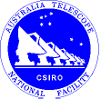
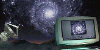
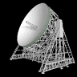

Project Office
Project Office
| Getting Started | Documentation | Glish | Learn More | Programming | Contact Us |
|
VERSIONID |
Project Office
|
|
The AIPS++ libraries are under-going a re-organization to improve their
modularity. Any site managers, developers or users of the AIPS++ libraries
should consult:
http://aips2.nrao.edu/daily/docs/casa.html
for further information.
|
|  |  |  |
Copyright © 1995-2006 Associated Universities Inc., Washington, D.C.